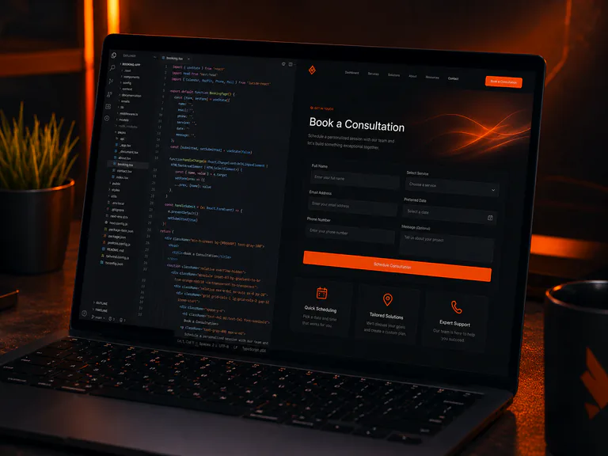

Website redesign
Website redesign for Johannesburg & Soweto businesses.
If your current website feels outdated, is difficult to use on mobile, has confusing navigation or no longer represents your business properly, it can be improved without throwing away everything that still works.
Start a redesign →
What gets improved
Redesign is more than changing colours.
A useful redesign starts by looking at what customers see and do: the structure, mobile experience, content, calls to action and broken or confusing areas. The goal is to keep what helps and improve what gets in the way. That can mean a cleaner layout, better service pages, stronger contact options, improved responsiveness, clearer navigation and a more professional overall presentation.
Layout redesign
Modernise outdated sections, spacing, typography and page structure.
↗02Mobile fixes
Correct layouts that overflow, stack badly or become difficult to use on phones.
↗03Navigation cleanup
Make important pages and actions easier for customers to find.
↗04Forms & calls to action
Improve enquiry flows so visitors know what to do next.
↗05WordPress redesign
Refresh an existing WordPress site or rebuild problem sections properly.
↗06Website fixes
Repair broken sections, responsive issues and other practical website problems.
↗When redesign makes sense
Common signs the website needs attention.
A redesign is worth considering when the site no longer matches the business, important information is hard to find, pages feel cluttered, the mobile version is frustrating, enquiry forms are unclear, or customers are being sent to a site you no longer feel comfortable showing. Sometimes only a few sections need work. Other times the cleanest option is to rebuild the website layout while keeping the useful content and domain.
What you get from a redesign
Keep what helps your customers. Improve what gets in their way.
Your current site
See which parts help customers and which parts are causing problems.
Your priorities
Choose what should stay, change or become easier to use.
Your new experience
Get a cleaner, mobile-friendly website built around your customers.
Your review
You see the redesign and request agreed changes.
Customers online
Your approved redesign is tested and launched.
Questions
Website redesign FAQ.
No. The scope depends on what is wrong. Useful content or working parts can remain while the weak areas are redesigned.
Yes. Existing WordPress layouts, pages and WooCommerce storefronts can be improved or rebuilt depending on the project.
Yes. A redesign normally keeps the existing domain unless there is a separate reason to change it.
For normal direct website projects, you can review the agreed work before the website-design payment is due.
A redesign you can compare
Inspect the existing VL&F site and our preview.
The VL&F existing-website and redesign-preview comparison shows changes to heading readability, service grouping, mobile spacing and quote buttons using matching screen captures. The concept is hosted on Spirit2k5; it has not replaced the client’s existing website.
Before a redesign launch, identify useful pages and content to retain, keep the current domain where appropriate, and list any URLs that must move. Changed page addresses need redirects and updated internal links so existing customers and search engines can reach the replacement content. Contact details and important enquiry paths are checked again on the agreed production setup.
Send the current website link with the problems customers encounter. We can then distinguish a few website fixes and maintenance tasks from a larger redesign, rather than assuming every site needs a complete rebuild.
Johannesburg & Soweto